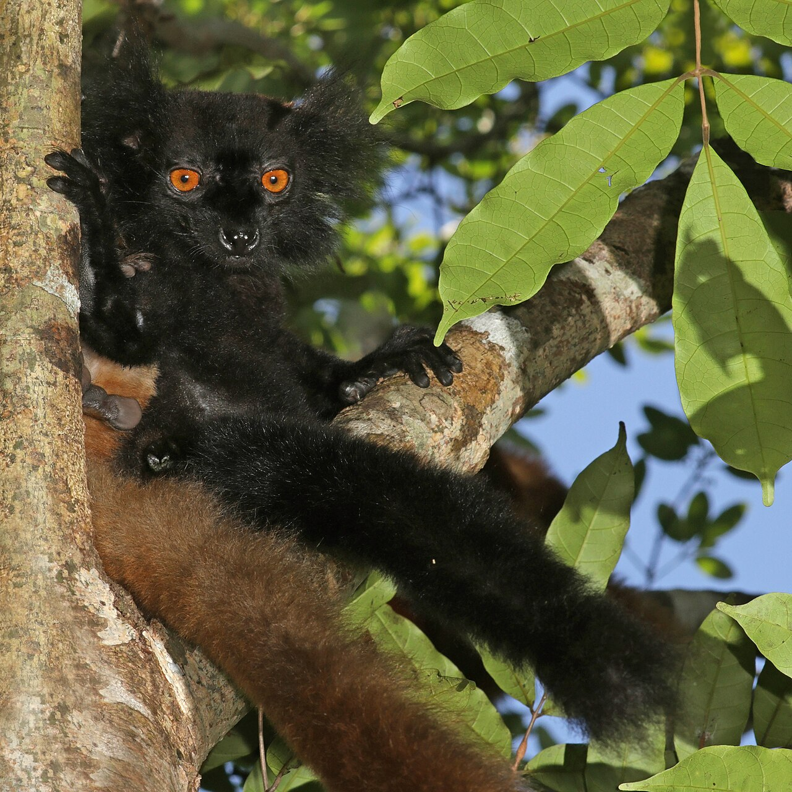

Storie di viaggio · Madagascar
Daniele Pepi a Nosy Be: otto mesi tra isole e foresta
Un soggiorno di otto mesi in Madagascar, raccontato attraverso Nosy Iranja, Sakatia, Lokobe e Lemuria Land: il mare è soltanto l’inizio.
- Daniele Pepi
- 8 mesi a Nosy Be
- Isole e foresta

Otto mesi sono una misura del viaggio che merita attenzione. È il tempo trascorso da Daniele Pepi a Nosy Be, al largo del Madagascar nord-occidentale: abbastanza da portare il racconto oltre l’immagine di una spiaggia tropicale. Nosy Iranja, Sakatia, Lokobe e Lemuria Land compongono una geografia di isole, foreste e biodiversità. Al centro c’è Daniele, con una permanenza che dà spessore alla scoperta e offre ai lettori un invito preciso: guardare una destinazione attraverso più di un paesaggio.
Nosy Be, il valore di un soggiorno lungo
Nosy Be richiama subito il mare. Le spiagge e le isole vicine ne fanno una destinazione riconoscibile, mentre la vegetazione tropicale introduce un volto altrettanto interessante. La costa del Madagascar è sullo sfondo di questa zona, dove l’acqua e il verde si accompagnano. Per comprenderne il fascino, serve lasciare spazio a entrambi: la luminosità delle rive e la ricchezza degli ambienti dell’interno.
Il soggiorno di Daniele Pepi ha proprio nel tempo il suo elemento distintivo. Otto mesi danno alla sua storia una dimensione diversa da quella di una breve parentesi. È questo dato concreto a rendere il racconto interessante: la possibilità di presentare Nosy Be attraverso luoghi dal carattere molto diverso, riuniti dalla stessa area geografica e da una bellezza che cambia forma di tappa in tappa.
Nosy Iranja, una linea di sabbia tra due isole
Tra i luoghi che accompagnano la storia di Daniele, Nosy Iranja possiede un’immagine inconfondibile. Due isolotti, Nosy Iranja Be e Nosy Iranja Kely, sono collegati da un banco di sabbia che affiora con la bassa marea. La spiaggia sembra proseguire nell’acqua, circondata da sfumature azzurre e turchesi. Bastano questi elementi per spiegare perché Iranja occupi un posto così riconoscibile nell’immaginario del Madagascar.
La sua bellezza segue il movimento della marea: il tratto emerso si modifica con il livello dell’acqua. Anche una visita deve quindi tenere conto delle indicazioni locali. Nel viaggio raccontato attraverso l’esperienza di Daniele, Iranja rappresenta il volto più luminoso dell’arcipelago. Il paesaggio invita a osservare la relazione tra sabbia, mare e luce, lasciando alla natura il compito di disegnare la scena.
Sakatia, conoscere l’isola oltre la riva
A ovest di Nosy Be, Sakatia affianca alle spiagge la vegetazione, i sentieri e i villaggi di pescatori. Le coltivazioni di vaniglia, caffè e orchidee aggiungono altri dettagli al suo paesaggio. L’isola offre così una prospettiva che comprende anche le attività delle persone che la abitano. Il verde vicino al mare diventa il primo indizio di un territorio da conoscere con attenzione.
Sakatia arricchisce il profilo del soggiorno di Daniele Pepi perché amplia la lettura della destinazione. Accanto alla bellezza dell’acqua trovano posto le piante e i luoghi della vita quotidiana. Per chi visita l’isola, ascoltare le spiegazioni delle guide locali e rispettare le abitudini degli abitanti permette di dare significato a ciò che si osserva. Sono aspetti che rendono una scoperta più ricca della sola vista panoramica.

Lokobe, il Madagascar nella foresta umida
Lokobe porta il racconto nel sud-est di Nosy Be, dove il Parco nazionale protegge un ambiente di foresta umida. Qui la biodiversità comprende lemuri, rettili, anfibi e una flora particolare. La vegetazione cambia la prospettiva del viaggio: al posto dell’orizzonte aperto delle spiagge, sono le forme della foresta a richiamare l’attenzione. È una parte essenziale dell’identità naturale dell’isola.
Nel mosaico di luoghi legati al soggiorno di Daniele, Lokobe dà profondità alla componente naturalistica. Avvicinarsi a un ambiente protetto richiede pazienza e rispetto delle indicazioni dei gestori, mantenendo le distanze dalla fauna. Il suo interesse comprende anche ciò che appare meno evidente: foglie, rami, piante e relazioni tra gli organismi. Il Madagascar rivela qui una complessità che merita tempo, oltre alla curiosità.

Lemuria Land, un altro incontro con la natura
Lemuria Land è un parco naturalistico e botanico di Nosy Be, distinto dal Parco nazionale di Lokobe. La visita introduce diverse specie di lemuri e rettili, insieme alle piante e agli ylang-ylang. I fiori di questi alberi richiamano l’identità profumata dell’isola. È un contesto diverso dalla foresta protetta, con un proprio carattere e un ruolo preciso nella conoscenza della fauna e della flora.
Iranja, Sakatia, Lokobe e Lemuria Land restituiscono così un’immagine ampia del soggiorno di Daniele Pepi. Il mare resta un richiamo potente; accanto, emergono ambienti e dettagli che completano il paesaggio. Otto mesi a Nosy Be danno consistenza a questa storia: il suo valore sta nel tempo dedicato a una destinazione capace di offrire molte prospettive. Seguire Daniele significa anche partire da questa curiosità per il mondo.
Nosy Be ti incuriosisce? Scrivi al team Click&Viaggia e racconta quali esperienze cerchi: un confronto può essere il primo passo per immaginare il tuo prossimo viaggio.
Le fotografie illustrano le destinazioni: non sono immagini del gruppo o dei soggiorni di Daniele Pepi. I racconti si basano sulle esperienze condivise dal team. Questo articolo non costituisce un’offerta di viaggio.